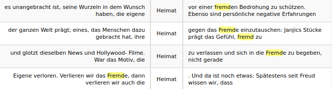

Analyse :

Itrameur ALL
Pour permettre l'analyse de nos données sur Itrameur, nous avons concaténé nos fichiers textes extraits au préalable par le script ( cf à la partie scripts)
Le script qui nous a permis de concatener nos fichiers txt et de le nettoyer de caractères indésirables est itrameur.sh. A l'aide d'expressions régulières il a fallu en outre se débarasser de balises parasites comme "lt" ou encore "gt".
Pour une bonne exécution sur Itrameur nous avons crée un dossier qui contiendra le fichier concatené. Ce dossier contient les dumps pour le mot Ausländer et les dumps pour le mot fremd.

L'importation du corpus s'est bien passée. Chaque cube dans la carte des sections corresponds à une page
Cooccurent Ausländer/expression régulière: [Au]sländer/w+
Coocurent Fremde/ expression régulière: [Ff]remd/w+

Si les coocurents de Fremde sont moins importants par rapport à Ausländer c'est parce que la poids de l'actualité est bien plus imprtant sur le web. Les thématiques directement tirées de l'actualité se caractérisent par leur diversité: Olaf Scholz, le chancelier allemand, les restrictions en Chine, le mariage avec les étrangers, le tourisme avec Alicante etc. En revanche la présence du mot Einheimsche qui signifie "locale" indique que le mot fremd s'emploie davantage lorsque les sujets ne sont pas internationaux.
Les mots composés en allemand
Dans le cadre suivant on peut observer les coocurences du mot "Fremdenfeindlichkeit" qui signifie xénophobie en français.Le mot se décompose ainsi, "-feiddlichkeit" = hostilité, et "Fremden"= envers les étrangers. Ce terme est récurrent et est étroitement corrélé avec le mot racisme, "Rassismus" ainsi que le mot haine "Hass". On constate donc que le refus de l'autre se traduit par la haine, la défiance et l'hostilité. Les composés de "Feind" sont nombreux:
On remarque ainsi que les mots allemands sont, la plupart du temps, composés; ainsi "fremd", qui est un adverbe, est associé à de nombreuses autres notions. Pour vérifier cela, il faut aller dans la rubrique dictionnaire dans Cadre, puis rechercher les coocurents dans la section qui porte ce nom.

Il est aussi intéressant de noter que fremd est essentiellement employé sous une forme pronominale. Le coocurent "uns" est la forme pronominale de la première personne du pluriel; un équivalent français serait, "qui nous sont étranger".

En ce qui concerne "Ausländer", il convient de faire la distinction entre le nom commun: "ein ou der Ausländer", et les formes déclinées comme le pluriel datif "(den) Ausändern" qui apparaît en deuxième position, ou encore la forme au génitif (complément du nom), "(des) Ausländers". On peut repérer ensuite des noms communs formés sur Ausländer comme "Ausländerpolitik", la politique étrangère, "Ausländerbehörde", le Servie d'immigration, "Ausländerrecht": le droit des étrangers, "Ausländerfeidlichkeit", la haine des étrangers, "Ausländerbeiräte", le Conseil consultatif des étrangers.

On peut faire la même recherche pour le mot "Ausland" qui désigne l'étranger en tant que contrée différente du pays d'origine. Ainsi "Auslandsbezug" est le lien avec l'étranger, "Auslandsberührung", le contact avec l'étranger, "Auslandsvertretung", la représentation de l'étranger, "Auslandsaufenthalt", le séjour à l'étranger, "Auslandsgesellschaft", la société étrangère.

Un concept spécifiquement allemand se dégage: HEIMAT.
Les coocurences de Heimat

Le mot Heimat et ses composés sont intraduisibles en français car ils expriment une réalité et un sentiment spécifiquement allemand. Ce terme désigne la patrie, la maison d'enfance, l'enracinement à la terre natale. Il est également associé à la nostalgie ou encore au mal du pays "Heimweh".
Il s'agit donc d'un sentiment lié à l'imaginaire germanique. Ce terme apparaît populaire aujourd'hui car il porte la valeur de l'authenticité.
En outre le mot "Heimat" est beaucoup relié au mot "Menschen", personnes. Il en ressort que "Heimat" est l'antonyme principal des mots "fremd" et "Ausländer" car il désigne l'attachement à la terre d'origine.
Les deux cadres suivants indiquent que Heimat est employé aussi bien avec les composés de fremd qu'avec les composés de Ausländer.

Etranger est aussi complémentaire du champ lexical de l'identité comme en témoignent les diverses formes de ce mot:

br>
La politique et le droit
Les institutions étatiques sont également très présentes. Le verbe clé "einbürgern" qui signifie "naturaliser" est révélateur de la présence des institutions; la naturalisation, "(die) Einbürgerung" apparaît ainsi comme une problématique bien présente.

Comme le prouve le cadre suivant, ce terme est étroitement corrélé à l'état "Staat". La citoyenneté, "Staatsangehörigkeit" indique la nature de l'enjeu migratoire en Allemagne.

Le mot migrant est en outre récurrent.

Le verbe "einbürgern" est enfin particulièrement relié à tous les composés de "Minister" comme "Innenministerin", la ministre de l'intérieur, ou "Bundesinnenministerium", le ministère fédéral.

Il convient de relever en dernier point la place du domaine juridique avec les mots composés autour de "Recht", le droit, comme "Rechtswahl", le droit de la législation, "Rechtsprechung", la jurisprudence, "Rechtsanwalt", l'avocat, "Güterrechtverordnungen", l'ordonnance sur le régime matrimonial, "Erbrechtsveordnung", le règlement sur les droits de succession, "Aufenthaltsrecht", le droit de séjour.

Conclusion
Il est impossible d'analyser en profondeur toutes les thématiques relevées car il y en a bien d'autres: le mariage, les noms des parties politiques etc. Mais ces quelques analyses ont le mérite de dévoiler la nature essentiellement politique et juridique de la présence du mot étranger sur le web allemand . Rappelons que le mot "Ausländer" semble davantage employé dans le cadre de la politique, intérieure et extérieure, même si ce n'est un emploi exclusif; tandis que "fremd" qui évoque le lointain et l'inconnu peut être employé dans des formes personnelles, liées à l'individu.